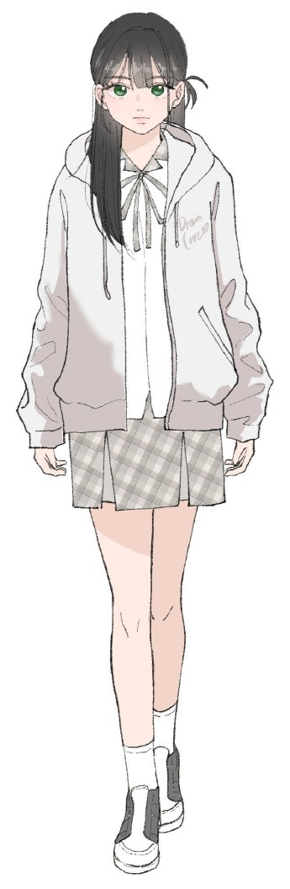

우연 (여주)
- 형편이 넉넉하지 않아 장학금과 대학 입시를 위해 공부에 매달리지만, 성적이 뛰어난 게 아니라 유지하기 위해 항상 간당간당하다.
- 단짝 유이가 맨날 노는 것 같은데도 성적은 항상 자기보다 위라는 걸 알면서도 말 못 할 열등감을 혼자 삭이고 있다.
- 빡빡한 현실 속 유일한 숨구멍은 아이돌 그룹 드림코어와 멤버 원. 학교에서의 모범생 이미지 때문에 숨기고 있다.
- 원의 열애설을 계기로 유일하게 기댈 수 있던 공간마저 무너진 느낌을 받고, 아이돌을 향한 감정 자체를 다시 보게 된다.